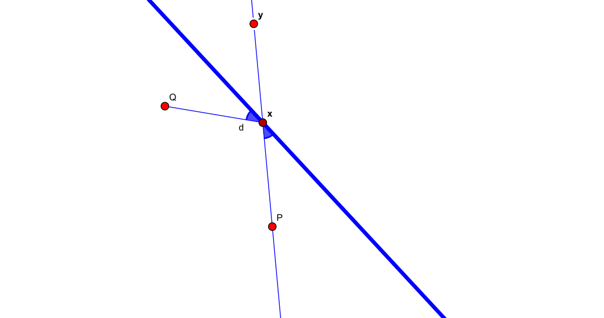
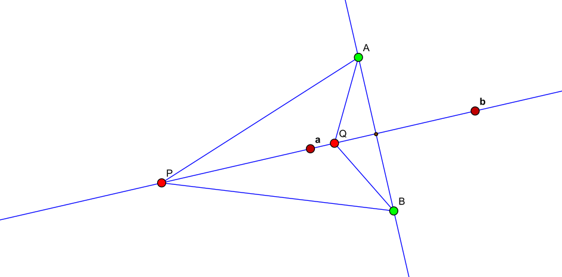

de donde concluimos la propiedad focal, un rayo de luz que emana en un foco se refleja en la elipse en dirección al otro foco y la mediatriz M, es tangente a la elipse en x. Esto también se puede deducir de la analogía del bombero y el río.

Conjugados armónicos
Dados dos puntos fijos P y Q, nos ocupamos por un momento de considerar el lugar geométrico de los puntos x del plano que satisfacen d(x,P)=hd(x,Q), para un 0<h∈R.
El caso h=1 es la mediatriz, esto es, la recta perpendicular a L, la que une pasa por P y Q, por su punto medio. Consideremos ahora h=1, buscando primero las soluciones en la recta L, necesitamos parametrizar esta en coordenadas baricéntricas, así buscamos x=αP+βQ, donde las coordenadas están relacionadas con las distancias dirigidas por α=d(P,Q)d(x,Q)β=d(Q,P)d(x,P)=d(P,Q)d(P,x), para que satisfagan la ecuación se requiere que βα=d(P,x)d(x,Q), es decir, ∣β/α∣=h y que α+β=1. Usando β=hα, encontramos αh=h+11βh=h+1h, denotando a=αhP+βhQ; ahora, usando β=−hα, encontramos αh′=1−h1βh′=h−1h, y denotamos b=αh′P+βh′Q, y son la soluciones en la recta L, a la ecuación.
Definición Las parejas de puntos colineales P,Q y a,b que satisfacen d(a,Q)d(P,a)=d(b,Q)d(P,b), se dicen armónicas o que a y b son conjugados armónicos con respecto a P y Q.
Para encontrar las soluciones fuera de L, observamos primero que el lugar geométrico que buscamos deberá ser simétrico respecto a L.
